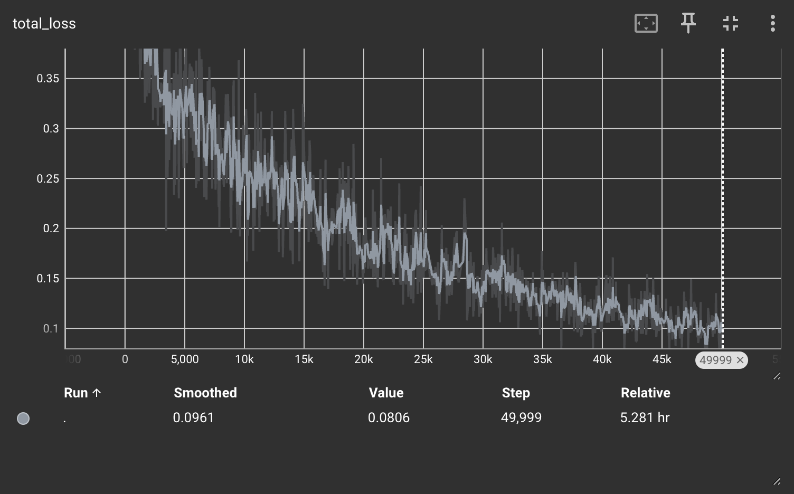

Detection Model Training#
For this project, we trained a Detectron2 model for object detection using COCO-formatted datasets.
What is Detectron2#
Detectron2 is a high-performance, flexible object detection library built by Facebook AI Research. It is a next-generation version of the original Detectron framework and provides a modular and extensible platform for implementing state-of-the-art object detection algorithms.
Some key features and concepts in Detectron2:
Modular Design: Detectron2 is designed with a modular architecture, allowing users to easily mix and match components to build custom object detection pipelines. It provides modular components for data loading, model building, training, and inference, making it highly flexible and customizable.
State-of-the-Art Models: Detectron2 includes implementations of a wide range of state-of-the-art object detection models, including Faster R-CNN, Mask R-CNN, and RetinaNet, among others. These models are pre-trained on large-scale datasets such as COCO and can be fine-tuned on custom datasets.
Efficient Training and Inference: Detectron2 is optimized for both training and inference performance. It supports distributed training across multiple GPUs and can efficiently utilize hardware accelerators such as NVIDIA GPUs. Additionally, it provides highly optimized inference code for fast and efficient object detection.
Flexible Configuration: Detectron2 uses a configuration system based on YAML files to specify model configurations and training parameters. This allows users to easily customize various aspects of the training process, such as model architecture, input size, learning rate schedule, and data augmentation techniques.
Rich Dataset Handling: Detectron2 provides built-in support for popular object detection datasets such as COCO, Pascal VOC, and Cityscapes. It includes data loaders and utilities for handling these datasets, making it easy to train and evaluate models on different datasets.
Active Development Community: Detectron2 is actively developed and maintained by Facebook AI Research, with contributions from the open-source community. It is released under the Apache License 2.0, allowing users to freely use, modify, and distribute the code.
Overall, Detectron2 is a powerful and versatile framework for building and deploying object detection models. Its modular design, state-of-the-art models, and efficient implementation make it a popular choice for both research and production applications in computer vision.
Architecture#
We have implemented the RetinaNet_R_50_FPN_3x architecture supplied in Detectron2’s model zoo. RetinaNet is a popular single-stage object detection architecture introduced by Facebook AI Research. It is designed to address the problem of class imbalance in object detection by introducing a novel focal loss function, which focuses training on hard examples. RetinaNet uses a single convolutional neural network (CNN) to simultaneously predict object bounding boxes and their corresponding class probabilities. This variant implements a ResNet-50 backbone network. ResNet-50 is a convolutional neural network architecture that consists of 50 layers. It is a popular choice for many computer vision tasks due to its balance between model complexity and computational efficiency.
FPN stands for Feature Pyramid Network, which is a type of architecture used to build feature pyramids in convolutional neural networks. FPN enhances the ability of the network to detect objects at different scales by combining features from multiple levels of the network hierarchy. It achieves this by adding lateral connections and upsampling layers to produce a set of feature maps at different resolutions.
This variant’s backbone was trained for three times the default number of iterations (hence the 3x), which typically results in better performance at the cost of longer training time.
Hyperparameters#
We didn’t need to do a lot of hyperparameter tuning. A base learning rate of 0.00025, 50000 training iterations and a batch size of 2 worked out well enough on a single GPU. You’ll see these in the configuration details in the model training script.
 The loss curve for the final detection model.
Dataset prep#
To train the model, we combined the left and right side images into a single COCO annotation files from s3://hp-deliverables-v2/coco_format_12_4/, shuffled the combined annotation file and partitioned that into training, validation and testing splits using a 70 percent, 20 percent and 10 percent ratio, respectively. The results of this were 3 COCO annotation files, one for each partition.
You can find the partitioned data here: s3://hp-deliverables-v2/partitions/.
Usage#
Environment set-up#
To train the models in this project, a g5.2xlarge (single NVIDIA A10G Tensor Core GPU) machine based on the Deep Learning OSS Nvidia Driver AMI GPU PyTorch 2.1.0 (Ubuntu 20.04) 20240116 AMI was set up. See more on this AMI at: https://docs.aws.amazon.com/dlami/latest/devguide/appendix-ami-release-notes.html. It is recommended to set up a machine with a similar runtime.
From your local machine or virtual machine equipped with a GPU, run the following (requires a mamba installation):
mamba init
source ~./bashrc
mamba -n env hp python=3.10
mamba activate hp
pip install torch==2.1.1 torchvision==0.16.1 --index-url https://download.pytorch.org/whl/cu121
python -m pip install 'git+https://github.com/facebookresearch/detectron2.git'
You can also install everything for the project by:
mamba env create --file environment.yml
python -m pip install 'git+https://github.com/facebookresearch/detectron2.git'
You should now have an environment called hp that has everything installed. Make sure you have a GPU available with versions compatible with the following:
nvcc: NVIDIA (R) Cuda compiler driver
Copyright (c) 2005-2023 NVIDIA Corporation
Built on Mon_Apr__3_17:16:06_PDT_2023
Cuda compilation tools, release 12.1, V12.1.105
Build cuda_12.1.r12.1/compiler.32688072_0
torch: 2.1 ; cuda: cu121
detectron2: 0.6
Training script#
The training script detector_train.py performs the following tasks:
Registers COCO-formatted datasets for training, validation, and testing.
Sets up configuration details for the Detectron2 training experiment.
Initializes and trains the model using the provided configuration.
Notable functions#
main(annotations_dir, images_dir)#
Description: Main function for training a Detectron2 model.
Args:
ANN_DIR (str): Directory containing COCO annotations.IMG_DIR (str): Directory containing associated images.
How to Run#
Make sure the environment is set up, see “Setting up your environment”: Ensure you have Detectron2 and the other dependencies installed in your environment. Also make sure you have access to a single GPU for a training experiment.
Prepare Dataset: Make sure you have access to the COCO formatted JSON annotation files and corresponding images stored in a directory.
Run the Script: Execute the script with the annotations directory and images directory as command-line arguments:
python detector_train.py <ANN_DIR> <IMG_DIR>
Replace
ANN_DIRwith the path to the directory containing COCO-formatted JSON annotations.Replace
IMG_DIRwith the path to the directory containing images.
For example:
python detector_train.py coco/ mapillary_images/
Training: The script will initialize and train the Detectron2 model based on the provided dataset and configuration. The trained model will be saved in the output directory specified in the configuration. By default, this directory is
./output/.